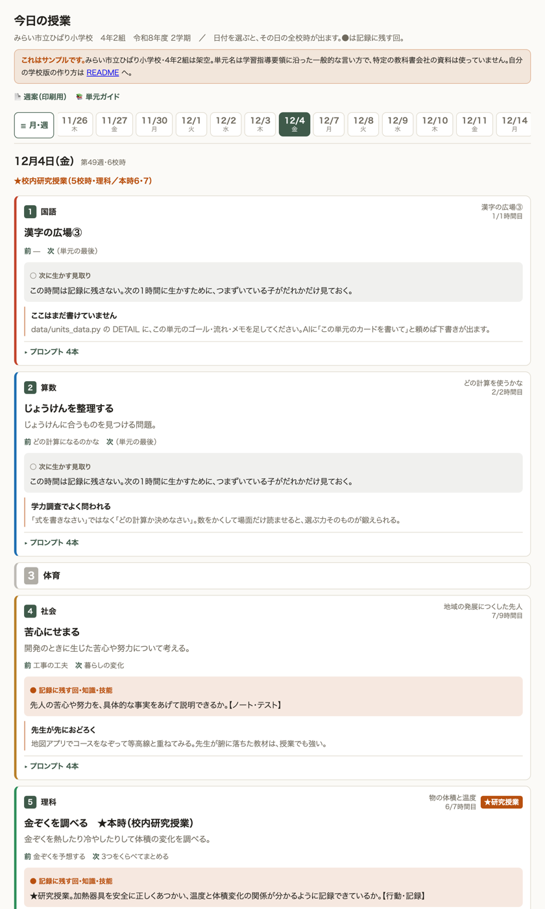
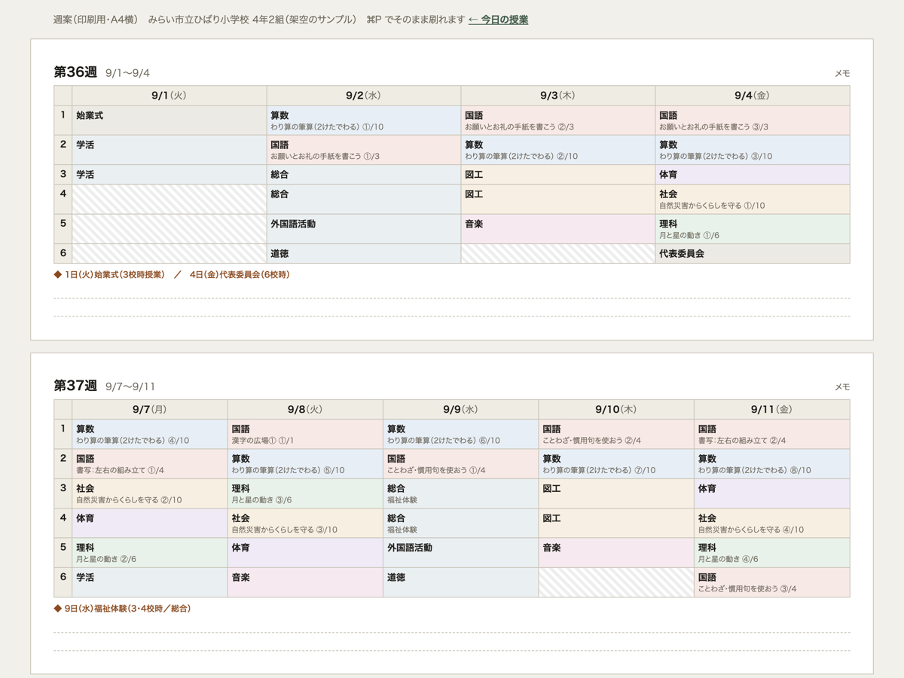
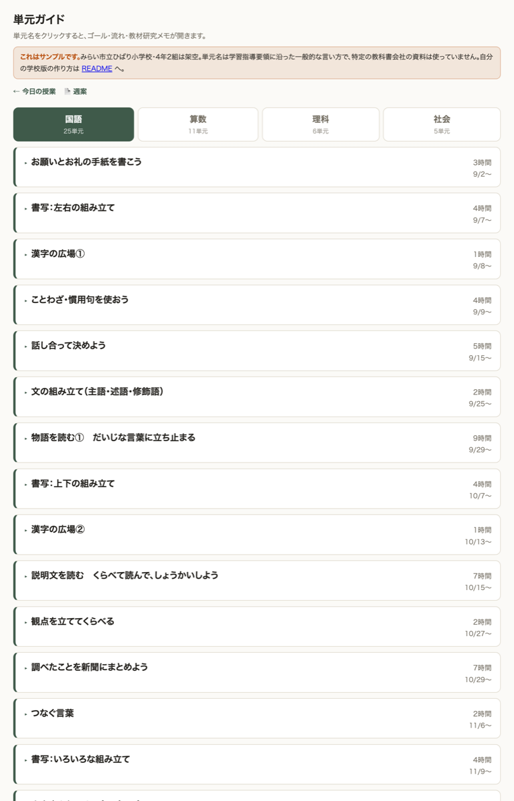

先が少し見通せるだけで、不安な気持ちは減ると思うんです。2学期の時間割と単元の割り付けを、AIエージェントと一緒に組んでみました。サンプルと作り方を公開しています。
2学期が始まる前に、時間割を組みます。行事をよけながら、教科書会社の年間指導計画とにらめっこして、国語は週にこのくらい、算数はこのくらい、と埋めていく。毎年やっているのに、毎年しんどい仕事です。
しんどさの正体を考えてみると、手を動かす作業そのものではない気がしました。決めなければいけないことの数のほうです。
ひとつひとつは小さいものです。でも1日に何十回もあって、朝から少しずつ削られていく。とくに担任を持ちはじめたばかりの頃は、この判断そのものに時間がかかります。
たたき台が先にあれば、判断は「決める」から「直す」に変わります。ゼロから考えるのと、目の前の案を見て「ここは違うな」と直すのとでは、必要な力がずいぶん違う。それならたたき台を先に作っておけばいいのではないか、と思ったのがはじまりでした。
日付を選ぶと、その日の1時間目から6時間目までが全部出ます。国語・算数・理科・社会には、本時の内容と、前の時間・次の時間、それに「今日は何を見取るか」がついています。



「今日の授業」の画面をそのまま印刷すると、その日だけの日案として刷れます。週案はA4横1枚。見通しを持つための紙は、この2枚があれば足りました。
見てのとおり、飾りはありません。私はデザインがそれほど得意ではないですし、これは情報を受け取るためだけのものなので、これでいいと思っています。読めればいい紙もある、という割り切りです。凝りはじめると作ることが目的になってしまうので、そこは早めにあきらめました。
各コマに、AIに投げるための文章を4つ置いています。単元名も、全何時間の何時間目かも、前後の時間も、すでに埋まった状態です。コピーして貼るだけで、書き換えるのは「今の学級の様子」の1〜3行だけ。
評価については、ひとつ決めごとをしました。毎時間3観点をつける形にはしていません。記録に残す回は単元で2〜4回に絞っています。教科書会社の年間指導計画にも【重点】【記録】という欄があって、記録に残す回は最初から絞られています。全部つけようとすると記録を作ることが目的になって、肝心の「次の1時間に生かす」が消えてしまうので。
4つめの「振り返りを読む」だけは、子どもの書いたものを扱います。ここは氏名を入れずにA児・B児として扱う形を、あらかじめ文章の中に条件として書き込んであります。毎回思い出さなくていいように、最初から道具の側に埋めておく作りにしました。学校ごとに情報の扱いの決まりがありますので、使うときは管理職や情報担当の先生に一度確認していただくのがよいと思います。
特別な技術は使っていません。用意したのは3つです。
あとは話しことばで伝えるだけでした。「月火水金は6時間、木は5時間。体育は月曜の4時間目と…」というふうに、行事も思い出した順に喋っています。日付と曜日が合わないところは向こうが聞き返してきますし、祝日は調べて入れてくれました。
できあがりは、書き換える場所が3つのファイルにまとまっています。カレンダー（学校名・時間割・行事）、単元（順番と時数）、見取り（記録に残す回）。この3つを直して作り直しの命令を1回打てば、画面が全部作りかえられます。
私が使ったのは Claude Code の Max プラン、モデルは Fable 5 を、考える時間をいちばん長い設定にして使いました。ただ、同じことは月20ドルほどの個人向けプランでもできると思います。ChatGPT の Codex でも、Claude Code でも、やることは変わりません。プランの中身は変わることがあるので、契約の前に各社のページで確かめてみてください。
授業は水物です。子どもの反応で進みは変わりますし、思っていたより進んでいないこともよくあります。急に休むことも、出張が入ることもあります。
だから「一度作って終わり」ではなく、直しやすい形で持っておくことにしました。直すときも、こう言うだけです。
本当にざっくりしたたたき台です。そのつもりで持っておくのがちょうどいいと思っています。
ここからは、学校や自治体で情報を担当されている方に向けた話です。
今回のものは個人で作れました。でも、これを組織として支援したらもっといいものになるはずだと思っています。理由は、データとして残るからです。
たとえばこの3つのファイルを Google ドライブのような共有の場所に置いておくと、それはそのまま「その年の、その学級で、何がいつ行われたか」の記録になります。来年その学年を持つ先生が、去年の並びを見てから組みはじめられる。今は担任が個人の頭とノートに持っていて、異動と一緒に消えてしまうものです。
これから生成AIが日常の道具になっていくと、こうした記録は「先生に聞く」のではなく「調べれば分かる」ものに変わっていくと思います。そのとき効いてくるのは、立派な様式ではなくて、読み取れる形でデータが残っているかどうかのほうです。様式やファイルの形は、後からどうにでも変えられます。残っていないものだけは、後から作れません。
DXハイスクールやAIパイロット校のように、すでに環境が整っているところであれば、こういう作り方はそのまま参考にしていただけると思います。学校ごとに時間割の決まりも行事も違うので、そこを一緒に組むところからになりますが。
実際に動くものを、そのまま見られる形にしました。日付を押して、コマを開いて、プロンプトをコピーするところまで全部さわれます。
公開しているサンプルは、学校名も学級も行事も、すべて架空のものに作り直してあります。単元名は学習指導要領の内容に沿った一般的な言い方にしていて、特定の教科書会社の資料は使っていません。自分の学級版のほうは、学校の情報も入りますし教科書会社の計画をもとに組みますので、手元だけで使うものにしています。この線引きも、そのままページに書いてあります。
サンプルを見る ↗ 作り方（README）↗中身は自由に使っていただいて、自由に作り替えていただいて大丈夫です。全部無料で、会員登録もありません。
「うちの学校の時間割の組み方だとどうなるか」「学年でそろえたい」「自治体で試してみたい」といったご相談があれば、お気軽にどうぞ。うまくいったこと、詰まったところを教えていただけるのもうれしいです。
先生の相談窓口へ見通しが立つと、少し気持ちが軽くなります。それだけのことなのですが、それが毎日続くとけっこう違うな、というのが作ってみての実感です。
← 実践アイデア村にもどる